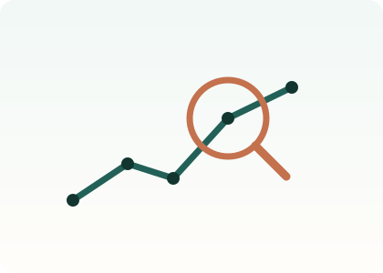

Por qué importa la detección temprana
Detectar a tiempo no es un tecnicismo de salud pública. Es la diferencia entre unos meses difíciles y unos años perdidos.
Un episodio depresivo que se identifica pronto suele responder mejor y dejar menos huella. Uno que se arrastra durante años tiende a volverse más difícil de tratar, a dejar secuelas en el trabajo y en los vínculos, y a acompañarse de otras condiciones de salud.
El problema es que la depresión no manda un aviso. No hay fiebre ni prueba de laboratorio. Quien la atraviesa muchas veces no la nombra, y quien lo rodea la interpreta como desgana.
Ahí entra el tamizaje: preguntar de forma sistemática, con las mismas preguntas, a mucha gente. No para diagnosticar, sino para saber a quién conviene mirar con más atención.

Ilustración original del proyecto
Qué aporta la epidemiología
Una consulta clínica responde «¿qué le pasa a esta persona?». La epidemiología responde otra cosa: «¿a cuántas les pasa, a quiénes, dónde, y qué tienen en común?».
Son preguntas distintas y las dos hacen falta. Sin la primera nadie se cura; sin la segunda no se sabe dónde poner los servicios, ni cuántos hacen falta, ni a quién priorizar cuando no alcanzan para todos.
El instrumento: el PHQ-9
Nueve preguntas sobre cómo se ha sentido la persona en las dos últimas semanas. Cada respuesta puntúa de 0 a 3 según cuántos días apareció el síntoma, y la suma va de 0 a 27. A partir de 10 se considera que hay sintomatología moderada o grave y que conviene una evaluación profesional.
Es breve, está validado internacionalmente y se puede aplicar en una encuesta de hogares sin necesidad de un especialista. Eso es lo que lo hace útil a escala de país — y también lo que marca su límite: no reemplaza a nadie.